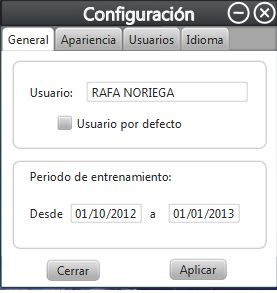
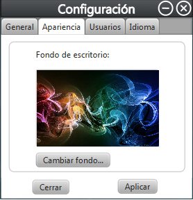
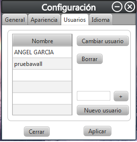
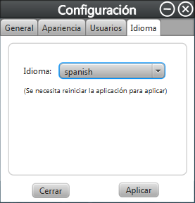

Pantalla principal
Estas son las pantallas de configuracion las cuales permiten configurar los parametros del programa y del usuario.




La ventana -General- nos permite modificar el nombre del escalador y marcarle o desmarcarle como usuario por defecto. Tambien permite las fechas del periodo de entrenamiento. Esos cambios se efectuaran seleccionando el boton -Aplicar-.
La ventana -Apariencia- nos permite cambiar la imagen de fondo del programa dando al boton -Cambiar fondo- y despues aplicando los cambios con el boton -Aplicar-.
La ventana -Usuarios- nos permite la configuracion de los usuarios, ya sea el cambio con el boton -Cambiar usuario-, la creacion dando al boton -Nuevo usuario-, rellenando el campo de texto con el nuevo usuario y seleccionando el boton -+- o eliminacion de los mismos con el boton -Borrar-. Una vez hecho esto los cambios se efectuan dando al boton -Aplicar-.
La ventana -Idioma- nos permite cambiar el idioma del programa, eligiendo el idioma que se desee y seleccionando el boton -Aplicar-. Este cambio se efectuara cuando se reinicie la aplicacion.